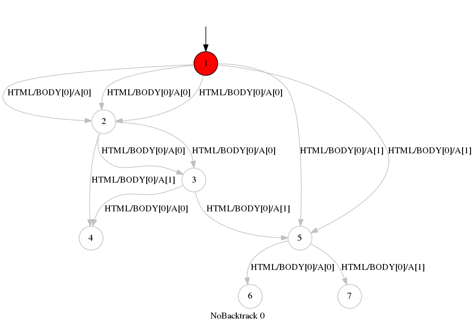

A web site with one PHP session variable. The variable is reset when visiting index.php, inverted when visiting page2.php. The remaining two pages have a different content depending on the value of the session variable. Any crawler that does not reset from the start page will fail to visit all states. A proper exploration with the NoBacktrackWsm yields the following graph:
